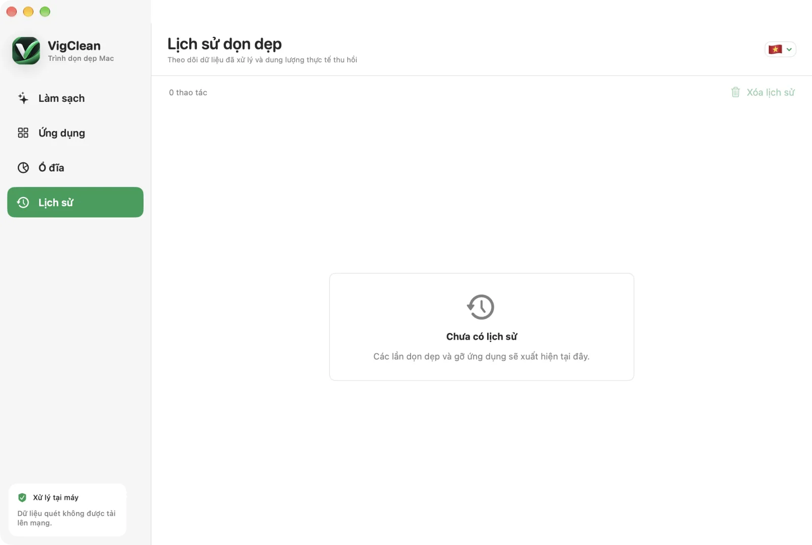

Cài đặt VigClean
Bạn chỉ cần tải tệp DMG, chép ứng dụng vào Applications và mở ứng dụng.
- 1
Tải tệp DMG
Mở GitHub Releases. Nếu không biết máy dùng chip nào, hãy tải VigClean Universal DMG.
Mở trang tải xuống - 2
Chép vào Applications
Mở tệp DMG, kéo VigClean vào thư mục Applications, sau đó tháo ổ đĩa cài đặt.
- 3
Mở ứng dụng lần đầu
VigClean yêu cầu macOS 13 Ventura trở lên. Vì bản miễn phí không được Apple notarize, trong Applications hãy bấm chuột phải vào VigClean, chọn Open rồi xác nhận Open.
Hiểu giao diện trước khi xóa
VigClean chia công việc thành bốn khu vực ở thanh bên trái.
- Làm sạch
- Quét cache, log, tệp tạm và dữ liệu có thể tạo lại.
- Ứng dụng
- Gỡ app cùng cache, cấu hình và dữ liệu hỗ trợ liên quan.
- Ổ đĩa
- Tìm thư mục và tệp lớn để bạn tự quyết định mục cần xử lý.
- Lịch sử
- Xem dung lượng đã thu hồi, số mục đã xử lý và lỗi của mỗi lần chạy.
Quét và dọn dẹp
Quét không xóa tệp. VigClean chỉ thay đổi dữ liệu sau khi bạn xác nhận danh sách đã chọn.

- 1
Bấm Quét
Chờ tiến trình đạt 100%. Bạn có thể bấm Hủy mà không làm thay đổi tệp.
- 2
Xem lại kết quả
Mở từng nhóm để xem đường dẫn. Màu xanh là dữ liệu có thể tạo lại. Màu cam cần xem kỹ. Dữ liệu cá nhân không được chọn mặc định.
- 3
Chọn mục cần dọn
Dùng Chọn đề xuất nếu muốn lấy lựa chọn an toàn. Bỏ dấu chọn ở bất kỳ nhóm nào bạn muốn giữ lại.
- 4
Bấm Chuyển vào Thùng rác
Kiểm tra tổng dung lượng trong hộp xác nhận. Giữ tùy chọn Xóa vĩnh viễn ở trạng thái tắt nếu bạn muốn có thể khôi phục tệp.
Gỡ ứng dụng và dữ liệu còn sót
Khu vực Ứng dụng tìm cả app và những tệp hỗ trợ liên quan đến app đó.

- 1
Mở Ứng dụng và bấm Quét ứng dụng
Chờ VigClean tải danh sách app đã cài và tính dung lượng liên quan.
- 2
Chọn app rồi kiểm tra đường dẫn
Bỏ chọn dữ liệu bạn muốn giữ, chẳng hạn cấu hình hoặc tài liệu làm việc của app.
- 3
Bật tắt app liên quan khi cần
Tùy chọn này giúp tránh lỗi tệp đang được sử dụng. Hãy lưu công việc trong app trước khi tiếp tục.
- 4
Bấm Gỡ cài đặt và xác nhận
macOS có thể hỏi mật khẩu quản trị nếu app hoặc dữ liệu nằm trong vị trí được bảo vệ.
Tìm thư mục đang chiếm dung lượng
Phân tích ổ đĩa giúp tìm tệp lớn. Kết quả không tự động được chọn để xóa.

Cách dùng
Mở Ổ đĩa, bắt đầu phân tích, sau đó sắp xếp theo dung lượng. Mở nhóm lớn để tìm đúng thư mục cần xem.
Downloads và Documents
Hai thư mục này có thể chứa dữ liệu cá nhân nên bị loại khỏi quét dọn mặc định. Chỉ bật Quét Downloads/Documents khi bạn muốn tự xem lại chúng.
Kiểm tra kết quả trong Lịch sử
Sau mỗi lần dọn hoặc gỡ app, VigClean lưu một bản ghi ngay trên máy.

Bấm Xóa lịch sử nếu không muốn giữ các bản ghi. Việc này chỉ xóa nhật ký của VigClean, không tác động đến tệp đã dọn hoặc Thùng rác.
Cập nhật VigClean
VigClean tự kiểm tra bản phát hành mới từ GitHub. Gói tải về được xác minh chữ ký trước khi cài.
- 1
Kiểm tra thủ công
Trên thanh menu macOS, mở VigClean rồi chọn Check for Updates.
- 2
Cài bản mới
Nếu có bản mới, đọc ghi chú phát hành, chọn cập nhật và cho phép ứng dụng khởi động lại.
Khi VigClean không thể quét hoặc xóa
Hãy kiểm tra các trường hợp phổ biến dưới đây trước khi chạy lại.
macOS không cho mở VigClean
Trong Applications, bấm chuột phải vào VigClean, chọn Open rồi xác nhận. Nếu vẫn bị chặn, mở System Settings, Privacy & Security và chọn Open Anyway cho VigClean.
Một số thư mục không xuất hiện
macOS có thể giới hạn quyền truy cập. Mở System Settings, Privacy & Security, Full Disk Access, bật VigClean rồi mở lại ứng dụng.
Có lỗi tệp đang được sử dụng
Lưu công việc, thoát app liên quan và thử lại. Khi gỡ ứng dụng, bạn có thể bật Tắt app liên quan khi xóa dữ liệu.
Muốn khôi phục tệp vừa dọn
Nếu bạn không bật Xóa vĩnh viễn, mở Thùng rác, bấm chuột phải vào tệp và chọn Put Back. Tệp đã xóa vĩnh viễn không thể khôi phục bằng VigClean.
Một đường dẫn bị VigClean chặn
VigClean chặn thư mục hệ thống, thư mục gốc của người dùng và đường dẫn bạn đã đánh dấu bảo vệ. Đây là cơ chế an toàn, không phải lỗi quét.
Vẫn cần trợ giúp?
Tạo issue và mô tả phiên bản macOS, phiên bản VigClean cùng thao tác gây lỗi. Không đăng đường dẫn hoặc dữ liệu riêng tư.